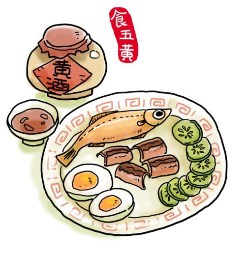
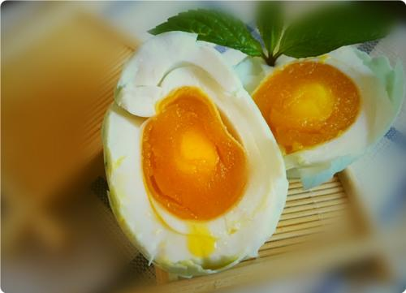

◆中国江南民间端午节有吃“五黄”的食俗。“五黄”指黄鳝、黄鱼、黄瓜、咸鸭蛋及雄黄酒。也有其他说法，咸  鸭蛋可以用黄豆替代。 神话传说《白蛇传》中，白娘子饮雄黄酒，现出蛇身的原形。故民间便认为蛇蝎蜈蚣等 毒虫可由雄黄酒破解，端午佳节饮雄黄酒可以驱邪解毒，身体健康。 据民间说法，在正午食用五黄可以更好的 驱毒避邪
◆端午有个说法，叫做：“五月五，五黄三白过端午。”五月又称五黄月，所以端午节要吃五黄：雄黄酒、黄鱼、 黄瓜、黄鳝和咸鸭蛋黄；还要吃茭白、咸鸭蛋蛋白、白切肉。另外，还要吃“一红”，它指的是汗菜（加大蒜炒熟 后菜汤红色）。
 ◆江南的端午还有吃“五黄”与“五白”的的食俗。“五黄”者，为黄瓜、黄鳝、黄鱼、咸蛋黄、雄黄酒（说法不一， 有人将黄梅、黄泥螺也作五黄之一。因雄黄有毒，现今将雄黄入白酒内饮者已少见，今多见以黄酒替代雄黄酒）。 “五白”者，为白切肉、白蒜头、白斩鸡、白豆腐、茭白。端午食“五黄”与“五白”的菜，可清热降火，健脾和胃。 当然，为了文化意义上的纪念，为了投汨罗江的屈原，吃粽子与赛龙舟也是端午节的重要习俗!
◆五六月份的黄鳝，有“赛人参”之说。此时的黄鳝肥嫩鲜美，营养丰富!
◆而“五黄”中的黄瓜有“第一瓜果”之称。农历5月。能吃到新鲜的黄瓜，时间上正好与端午对上，也就自然成了 端午的必吃之物。另外，黄瓜有清热解毒、解渴生津之功效!
◆吃咸蛋是端午的习俗。咸蛋黄因有个“黄”字，故也入于“五黄”之内，端午吃咸蛋黄，寓意着健康平安!
◆至于黄鱼，则端午时节的大、小黄鱼，量多质优，为这一时节的主打海鲜，营养丰富且当令的大、小黄鱼，理所 当然地列入端午必食的“五黄”